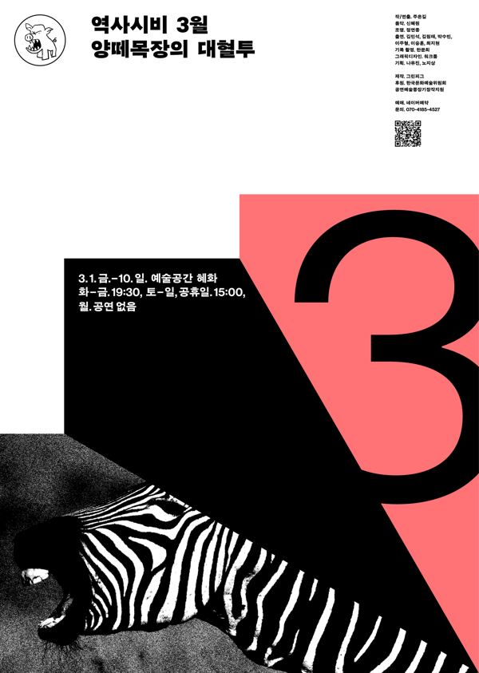

주은길 작·연출

역사시비프로젝트: 승자의 관점을 거부하고 우리의 관점으로 역사를 다시 쓰는 3개년 프로젝트. 2024년 한 해 동안 매달 한 편씩, 1년 전 같은 달에 있었던 사건을 출발점으로 삼아 공연을 올렸다. 3월. 2023년 3월 동물원을 탈출해 3시간 반 만에 붙잡힌 얼룩말 '세로'를 모티브로, 평화로운 목장 바깥으로 발을 내딛는 양들의 이야기. 비인간의 입을 빌려, 길들여진 채 살아가는 인간과 비인간 모두에게 거부하고 저항할 권리를 묻는다.
2024.3.1–10 / 예술공간 혜화 - 역사시비프로젝트 3월
2025 제33회 대산문학상 희곡 부문
2026.8.19 리뷰
2025.11.11 대산문학상 수상 기사
2024.4.8 관람 후기
2024.3.29 관람 후기
2024.3.11 관람 후기
2024.3.10 관람 후기
2024.3.8 관객과의 대화 후기
2024.3.6 관람 후기
이전: 〈진짜연극-불멸의 이기석〉 | 다음: 〈잃어버린 몸을 찾아서〉
아카이브로 돌아가기 | 아무 작품이나
발행일 2026.11.9